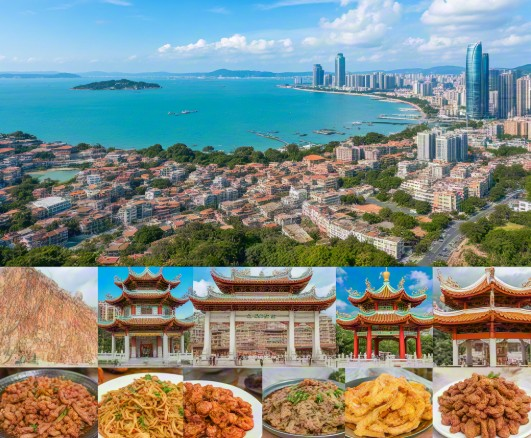

历史人文
广东有着悠久的历史和丰富的人文底蕴，广府文化、潮汕文化、客家文化等多元文化在这里交融。以下是详细介绍：
文化起源
广东文化的起源可追溯到古代，涉及多个历史时期和文化传统。以下是有关广东文化起源的主要信息：古代百越文化：广东所在的地区曾经是百越古国的一部分，百越文化具有悠久的历史。这一地区自古以来就有丰富的农业、手工艺和文化传统。在今天的广东仍然可以看到，包括传统的广绣、潮剧、广东音乐等。海洋文化：广东因其沿海特征，形成了独特的海洋文化。这种文化强调对海洋的利用，生活在沿海需要克服许多困难，因此也培养了广东人开拓进取的品质。
文化历史

广东文化历史丰富多彩，可以追溯到古代，涵盖了多个历史时期。以下是广东文化历史的主要阶段和特点：古代时期：广东的历史可以追溯到秦朝，当时这一地区是百越的一部分。百越文化在这个地区形成，包括广绣、潮剧、广东音乐等。古代广东因其地理位置，成为重要的交通要道和商业中心，吸引了商人和移民。唐宋时期：在唐宋时期，广东成为海上丝绸之路的重要节点，对外贸易繁荣，带来了多元文化的融合，留下了一些古老的文化遗产，如古建筑和古街巷。
文化发展
多元文化融合：广东地理位置独特，位于沿海，同时受珠江流域影响，形成了独特的地理环境，促进了不同文化的交流与融合。这里融合了百越文化、中原文化、海外文化等多个文化传统。海洋文化：广东以其沿海地貌而著名，海洋文化强调开拓进取、兼容并蓄的品质。这种文化在建筑、服饰、习俗等方面都有体现。广府文化与潮汕文化：广东以其广府文化、潮汕文化、客家文化闻名于世，是粤菜的代表之一，也为广东增添了独特的美食文化和民俗文化。
文化概括
广东文化是一个多元而富有活力的文化体系，融合了多个历史时期和地理特点。以下是关于广东文化的概括：多元文化融合：广东地理位置独特，位于沿海，这种地理特点促进了不同文化的交流与融合。广东文化融合了百越文化、中原文化、海外文化等多个文化传统，形成了多元性。海洋文化：广东以其沿海地貌而著名，海洋文化强调开拓进取、兼容并蓄的品质。这种文化体现在建筑、服饰、习俗等方面，赋予了城市独特的风格。美食文化：广东以其粤菜而著名，是中国八大菜系的代表之一，粤菜的鲜、嫩、滑等特点使其成为中国最著名的美食之一，也为广东增添了独特的美食文化。